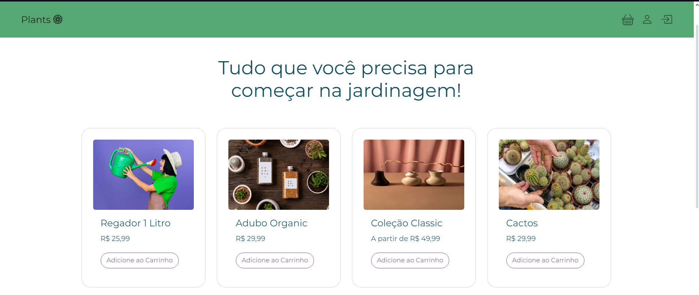

Plants
Ferramentas utilizadas:
- HTML
- CSS
- Bootstrap

Este projeto foi desenvolvido como parte de um exercício no curso de Desenvolvedor Fullstack da Gama Academy, que concluí em 2022. A ideia era criar um e-commerce focado na venda de itens para jardinagem, o que me proporcionou uma experiência valiosa para exercitar minha criatividade ao desenvolver o conceito do site do zero. Além disso, utilizei CSS Animation para dar mais dinamismo ao site e aperfeiçoei a responsividade, implementando um menu hambúrguer para as versões mobile. Embora seja um projeto mais antigo, que ainda carece de recursos de acessibilidade, estou trabalhando para aprimorá-lo em breve.